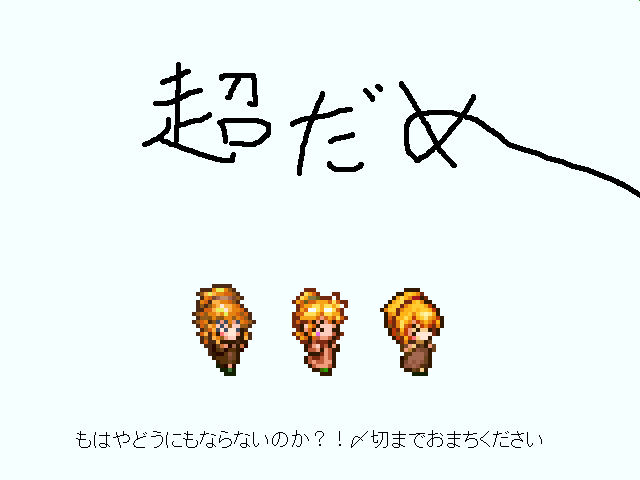

 |
|
| 作者：ざるそば | |
| ジャンル：PVちっく見るゲ | |
| ツクール：2000 | |
| 作者コメント： Side Story: 四方を海に囲まれた大地 ポテチ王国 ここは内戦と魔王軍の襲来により、混迷を極めていた。 そこで国を救う真の勇者を見極めるため、ロングソードという名の剣を抜く試練が与えられた。 剣に選ばれし者こそ真の勇者、アレックス。 だが、選ばれたアレックスは、100万人にも及んだ。 それはアレックス同士を競わせ、不要な人材を淘汰し、 本当の意味で魔王を倒せるアレックスを選ぶ計画だったのだ……！ ※本編とはまったく関係ありません。 ほんぺん: ,,×△×） ＜ あの のっくあうとが うたう！ おどる！ はねる！ ,,×△×） ＜ こんかいこそ まにあわせます（つよきなはつげん） =========================================== 5/1 近況追記 意外と忍殺がおもしｒグワーッ！！もうGWアバーッ？！ 知らないひとがけっこういるみたいなので、「実在性ミリオンアーサー」！ たのしくておすすめ！（ダイレクトマーケティング） |
|
| 管理人コメント： 視聴者がノックアウトされるほどの可愛さを地上波に乗せて！ |
|
| ダウンロード(550kB) / 感想掲示板 |
|
| 前の作品 / 次の作品 / TOPへ戻る | |